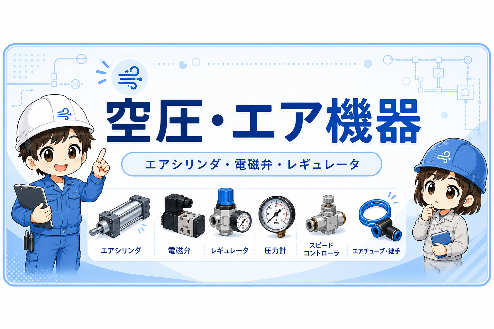

Preview専用です。本番の日本語トップにはまだ反映していません。英語トップも変更していません。
カテゴリから探す
すべて制御の基礎回路空圧・エア機器工具比較・使い分けキャリア・転職
制御の基本用語を最短でつかむ
入力・出力・センサの関係を、最初に押さえる順で整理。
- 制御とは？ 概要をつかもう
- PLC入出力ユニットの基礎
- ON/OFF制御の基本
- a接点・b接点の違い
回路の土台を図で理解する
回路の読み方と基本パターンを、図で追える順に整理。
- 自己保持回路とは？
- タイマー回路とは？
- 手動・自動切替回路とは？
- GX Works3のMUL・DIV命令とは？

空圧・エア機器エアシリンダ、電磁弁、レギュレータ、スピードコントローラ、圧力計などを整理します。 工具の記事一覧現場で使う工具や周辺アイテムを、選び方・使い方の入口としてまとめています。
工具の記事一覧現場で使う工具や周辺アイテムを、選び方・使い方の入口としてまとめています。
 比較・使い分け似ている部品・工具・機器の違いを、選び方の目線で整理しています。
🧭新カテゴリキャリア・転職電気・FAの仕事、必要なスキル、キャリア、転職先の考え方を技術者目線で整理します。
比較・使い分け似ている部品・工具・機器の違いを、選び方の目線で整理しています。
🧭新カテゴリキャリア・転職電気・FAの仕事、必要なスキル、キャリア、転職先の考え方を技術者目線で整理します。
実務で使う道具の参考に電気と制御の実務メモ Amazonストアを見る
記事で扱う工具や周辺アイテムを、必要なときだけ確認できる案内です。